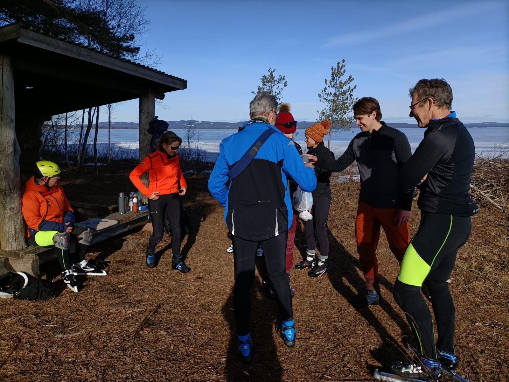

Elke dag een stuk verder, elke nacht een andere slaapplek.
Huttentocht op natuurijs
Elke dag verder over het ijs, elke avond een warme slaapplek.
Je schaatst meerdere dagen achter elkaar een tocht over natuurijs en overnacht onderweg in een huisje of hostel. In Zweden is dat vaak een vandrarhem.
- Waar
- Zweden en Finland
- Overnachten
- Huisje of hostel